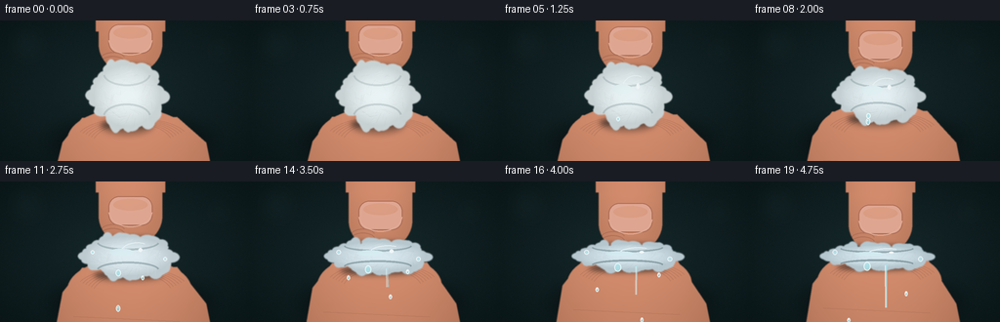
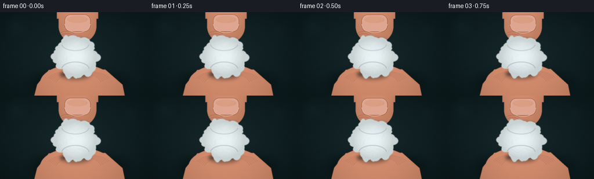
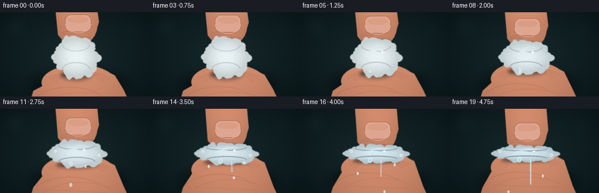

CODING AGENTS AS PIXEL WORLD MODELS
traex/GPT-5.6-Sol · mechanics_0016
点击播放 · 原生 RGB 像素
逐轮保存的候选
回放视频、检查图与代码变化。
每份候选均可单独播放。实际图片检查记录在下方工具轨迹中。
候选 01播放与检查图
点击播放 · 原生 RGB 像素

展开代码变化
--- 上一保存版本
+++ 本次保存版本
@@ -0,0 +1,237 @@
+from pathlib import Path
+import math
+import numpy as np
+from PIL import Image, ImageDraw, ImageFilter
+import artifact_io
+
+# Deterministic, fully procedural macro animation.
+W, H, N, FPS = 256, 144, 20, 4
+S = 3
+w, h = W*S, H*S
+rng = np.random.default_rng(1601)
+
+# Persistent cotton tuft/fiber layout so the material deforms coherently.
+tufts = []
+for i in range(74):
+ a = rng.uniform(0, math.tau)
+ radial = rng.uniform(.76, 1.02)
+ size = rng.uniform(3.0, 8.5)
+ tufts.append((a, radial, size, rng.uniform(.72, 1.28), rng.uniform(-.12, .12)))
+fibers = []
+for i in range(145):
+ a = rng.uniform(0, math.tau)
+ r = math.sqrt(rng.uniform(.03, .95))
+ length = rng.uniform(3, 11)
+ fibers.append((a, r, length, rng.uniform(-1.2, 1.2), rng.uniform(.35, .92)))
+
+# Fixed fine-grain sources avoid temporal texture flicker.
+noise_small = rng.normal(0, 1, (h, w)).astype(np.float32)
+noise_img = Image.fromarray(np.uint8(np.clip(noise_small*35+128,0,255))).filter(ImageFilter.GaussianBlur(2.3*S))
+noise_blur = (np.asarray(noise_img).astype(np.float32)-128)/35
+
+def mask_ellipse(box, blur=0):
+ im = Image.new('L',(w,h),0); d=ImageDraw.Draw(im); d.ellipse(tuple(int(v*S) for v in box),fill=255)
+ return im.filter(ImageFilter.GaussianBlur(blur*S)) if blur else im
+
+def composite_np(base, layer, mask):
+ return Image.composite(layer, base, mask)
+
+def skin_layer(kind, contact, frame):
+ """Make a softly shaded finger, plus anatomical nail/creases."""
+ mask = Image.new('L',(w,h),0); d=ImageDraw.Draw(mask)
+ if kind == 'top':
+ x0,x1 = 101*S,166*S; tip=(contact+8)*S
+ d.rectangle((x0,-20*S,x1,tip-30*S),fill=255)
+ d.ellipse((x0,(contact-53)*S,x1,tip),fill=255)
+ # subtle left knuckle widening off frame
+ d.rectangle((98*S,-10*S,169*S,11*S),fill=255)
+ else:
+ # Broad thumb rises from below and angles gently left-to-right.
+ pts=[(64*S,(contact+18)*S),(84*S,(contact-7)*S),(181*S,(contact-8)*S),
+ (211*S,125*S),(218*S,160*S),(55*S,160*S)]
+ d.polygon(pts,fill=255)
+ d.ellipse((69*S,(contact-17)*S,196*S,(contact+48)*S),fill=255)
+ mask=mask.filter(ImageFilter.GaussianBlur(0.45*S))
+ yy,xx=np.mgrid[0:h,0:w]
+ if kind=='top':
+ radial=(xx/S-132)/38
+ vertical=np.clip((yy/S-contact+52)/62,0,1)
+ light=18*(1-radial**2)-16*vertical + 5*noise_blur
+ else:
+ radial=(xx/S-133)/82
+ vertical=np.clip((yy/S-contact)/55,0,1)
+ light=19*(1-radial**2)-13*vertical + 4*noise_blur
+ # warm believable skin; wet contact is slightly cooler
+ arr=np.empty((h,w,3),np.float32)
+ arr[:,:,0]=193+light; arr[:,:,1]=127+light*.74; arr[:,:,2]=98+light*.62
+ layer=Image.fromarray(np.uint8(np.clip(arr,0,255)),'RGB')
+ detail=Image.new('RGBA',(w,h),(0,0,0,0)); q=ImageDraw.Draw(detail,'RGBA')
+ if kind=='top':
+ # Nail follows finger approach.
+ nb=(111*S,(contact-43)*S,156*S,(contact-13)*S)
+ q.rounded_rectangle(nb,radius=11*S,fill=(225,170,151,225),outline=(130,76,65,105),width=1*S)
+ q.ellipse((116*S,(contact-40)*S,151*S,(contact-28)*S),fill=(250,204,187,80))
+ q.arc((111*S,(contact-44)*S,156*S,(contact-11)*S),5,175,fill=(255,224,210,115),width=1*S)
+ # side crease near fingertip
+ for j in range(2):
+ y=(contact-6+j*4)*S
+ q.arc((103*S,y-8*S,128*S,y+5*S),195,345,fill=(112,64,53,62),width=S)
+ else:
+ # thumbprint ridges and compression folds near contact
+ for j in range(6):
+ inset=j*3*S
+ q.arc((79*S+inset,(contact-7)*S+j*S,192*S-inset,(contact+34)*S+j*2*S),198,341,
+ fill=(119,69,56,40),width=S)
+ q.line([(75*S,(contact+43)*S),(184*S,(contact+48)*S)],fill=(104,58,47,35),width=S)
+ layer=Image.alpha_composite(layer.convert('RGBA'),detail).convert('RGB')
+ return layer,mask
+
+def cotton_mask(cx,cy,rx,ry,p):
+ m=Image.new('L',(w,h),0); d=ImageDraw.Draw(m)
+ # Dense core, plus many irregular perimeter tufts.
+ d.ellipse(((cx-rx*.88)*S,(cy-ry*.88)*S,(cx+rx*.88)*S,(cy+ry*.88)*S),fill=255)
+ for a,r,size,aspect,jit in tufts:
+ # edge lobes flatten with pressure, while sides mushroom out
+ x=cx+math.cos(a)*rx*r
+ y=cy+math.sin(a)*ry*r
+ sz=size*(.86+.26*(1-p))
+ sx=sz*aspect*(1+.25*p*abs(math.sin(a)))
+ sy=sz/aspect*(1-.28*p)
+ d.ellipse(((x-sx)*S,(y-sy)*S,(x+sx)*S,(y+sy)*S),fill=255)
+ return m.filter(ImageFilter.GaussianBlur(.55*S))
+
+def draw_cotton(base,cx,cy,rx,ry,p,frame):
+ mask=cotton_mask(cx,cy,rx,ry,p)
+ yy,xx=np.mgrid[0:h,0:w]; X=xx/S;Y=yy/S
+ nx=(X-cx)/rx; ny=(Y-cy)/max(ry,1)
+ edge=np.clip(1-(nx*nx+ny*ny),0,1)
+ # White cotton turns translucent blue-gray as water is expressed.
+ wet=p*.72
+ light=33*edge + 10*noise_blur - 10*wet
+ arr=np.empty((h,w,3),np.float32)
+ arr[:,:,0]=202+light-20*wet
+ arr[:,:,1]=211+light-8*wet
+ arr[:,:,2]=212+light+2*wet
+ cotton=Image.fromarray(np.uint8(np.clip(arr,0,255)),'RGB')
+ # Internal clumps, glossy wet zones and many coherent fibers.
+ detail=Image.new('RGBA',(w,h),(0,0,0,0)); d=ImageDraw.Draw(detail,'RGBA')
+ for k,(a,r,L,bend,alpha) in enumerate(fibers):
+ # coordinates deform directly with ellipse
+ x=cx+math.cos(a)*rx*r*.88; y=cy+math.sin(a)*ry*r*.84
+ ang=a+math.pi/2+bend
+ l=L*(1+.25*p)
+ x2=x+math.cos(ang)*l; y2=y+math.sin(ang)*l*(1-.45*p)
+ shade=255 if k%3 else 116
+ col=(shade,shade,shade+2,int(54*alpha) if shade==255 else int(34*alpha))
+ d.line((x*S,y*S,x2*S,y2*S),fill=col,width=max(1,int(.42*S)))
+ # wet folds/shadows at pinched top and bottom
+ d.arc(((cx-rx*.72)*S,(cy-ry*1.10)*S,(cx+rx*.72)*S,(cy-ry*.30)*S),8,172,
+ fill=(70,99,102,int(42+65*p)),width=2*S)
+ d.arc(((cx-rx*.72)*S,(cy+ry*.28)*S,(cx+rx*.72)*S,(cy+ry*1.12)*S),188,352,
+ fill=(59,88,94,int(46+72*p)),width=2*S)
+ if p>.10:
+ # liquid sheen swatches
+ d.ellipse(((cx-rx*.44)*S,(cy-ry*.38)*S,(cx+rx*.12)*S,(cy-ry*.02)*S),
+ fill=(209,247,249,int(20+65*p)))
+ d.arc(((cx-rx*.2)*S,(cy-ry*.70)*S,(cx+rx*.62)*S,(cy+ry*.45)*S),210,295,
+ fill=(247,255,255,int(80+80*p)),width=max(S,int(1.25*S)))
+ d.ellipse(((cx+rx*.24)*S,(cy-ry*.42)*S,(cx+rx*.33)*S,(cy-ry*.22)*S),
+ fill=(255,255,255,int(100+95*p)))
+ detail.putalpha(Image.composite(detail.getchannel('A'),Image.new('L',(w,h),0),mask))
+ cotton=Image.alpha_composite(cotton.convert('RGBA'),detail).convert('RGB')
+ # Contact shadow gives the squashed ball weight.
+ sh=Image.new('RGBA',(w,h),(0,0,0,0)); sd=ImageDraw.Draw(sh,'RGBA')
+ sd.ellipse(((cx-rx*.78)*S,(cy+ry*.72)*S,(cx+rx*.78)*S,(cy+ry*1.28)*S),fill=(4,17,20,90))
+ sh=sh.filter(ImageFilter.GaussianBlur(3*S))
+ base=Image.alpha_composite(base.convert('RGBA'),sh).convert('RGB')
+ return Image.composite(cotton,base,mask),mask
+
+def water_overlay(frame,cx,cy,rx,ry,p):
+ lay=Image.new('RGBA',(w,h),(0,0,0,0)); d=ImageDraw.Draw(lay,'RGBA')
+ bottom=cy+ry*.83
+ if frame>=5:
+ # bead swelling at the low point
+ br=1.5+2.1*p
+ d.ellipse(((cx-10-br)*S,(bottom-br)*S,(cx-10+br)*S,(bottom+br*1.5)*S),
+ fill=(168,228,236,175),outline=(238,255,255,205),width=S)
+ # Falling droplets: each has a deterministic start and acceleration.
+ starts=[(7,-10,1.00),(10,14,.76),(12,-30,.60),(14,31,.52)]
+ for st,dx,rate in starts:
+ age=frame-st
+ if age>=0:
+ y=bottom+3+rate*(age**1.72)*3.1
+ x=cx+dx+math.sin(age*.9+dx)*1.2
+ if y<151:
+ rr=2.2 if dx==-10 else 1.55
+ d.ellipse(((x-rr)*S,(y-rr*1.4)*S,(x+rr)*S,(y+rr*1.7)*S),
+ fill=(153,218,229,190),outline=(245,255,255,210),width=S)
+ d.ellipse(((x-.7)*S,(y-1.1)*S,(x+.2)*S,(y-.2)*S),fill=(255,255,255,230))
+ if frame>=13:
+ # A brief, bright thread of expressed water under strongest pressure.
+ strength=(frame-12)/7
+ x=cx+9
+ end=min(140,bottom+9+strength*34)
+ d.line((x*S,(bottom-1)*S,(x+math.sin(frame)*1.1)*S,end*S),fill=(170,229,237,int(100+105*strength)),width=2*S)
+ d.line(((x-.45)*S,bottom*S,(x-.1)*S,end*S),fill=(246,255,255,int(85+90*strength)),width=S)
+ # Side beads squeezed out at high pressure
+ if p>.43:
+ for j,side in enumerate((-1,1)):
+ x=cx+side*rx*(.82+j*.03); y=cy+(-4+7*j)
+ r=1.2+1.4*p
+ d.ellipse(((x-r)*S,(y-r)*S,(x+r)*S,(y+r)*S),fill=(177,231,238,160),outline=(250,255,255,185),width=S)
+ return lay
+
+def background():
+ yy,xx=np.mgrid[0:h,0:w]; X=xx/S;Y=yy/S
+ vign=np.sqrt(((X-128)/155)**2+((Y-71)/95)**2)
+ fine=noise_small*1.3
+ arr=np.empty((h,w,3),np.float32)
+ arr[:,:,0]=22-11*vign+fine
+ arr[:,:,1]=40-16*vign+fine
+ arr[:,:,2]=43-17*vign+fine
+ return Image.fromarray(np.uint8(np.clip(arr,0,255)),'RGB')
+
+frames=[]
+for f in range(N):
+ t=f/(N-1)
+ # Slow positioning, then visibly rapid increase in pressure through the middle/end.
+ p=t*t*(3-2*t)
+ p=p**1.18
+ cx=130+1.3*math.sin(t*math.pi)
+ cy=76.5
+ rx=34.0+18.5*p
+ ry=31.5-20.0*p
+ contact_top=cy-ry+1.6
+ contact_bottom=cy+ry-1.2
+ im=background()
+ # Defocused laboratory/counter bokeh and table seam.
+ bg=Image.new('RGBA',(w,h),(0,0,0,0)); bd=ImageDraw.Draw(bg,'RGBA')
+ bd.line((0,119*S,w,119*S),fill=(83,109,108,35),width=S)
+ for bx,by,br in [(28,25,20),(224,31,14),(207,101,10)]:
+ bd.ellipse(((bx-br)*S,(by-br)*S,(bx+br)*S,(by+br)*S),fill=(89,132,131,14))
+ bg=bg.filter(ImageFilter.GaussianBlur(10*S)); im=Image.alpha_composite(im.convert('RGBA'),bg).convert('RGB')
+ # Ground shadow under hand/cotton assembly.
+ sh=Image.new('RGBA',(w,h),(0,0,0,0)); sd=ImageDraw.Draw(sh,'RGBA')
+ sd.ellipse((52*S,104*S,217*S,145*S),fill=(0,6,8,130)); sh=sh.filter(ImageFilter.GaussianBlur(9*S))
+ im=Image.alpha_composite(im.convert('RGBA'),sh).convert('RGB')
+ # Fingers first; cotton sits between and overlaps their contact rims.
+ bottom,bm=skin_layer('bottom',contact_bottom,f)
+ im=Image.composite(bottom,im,bm)
+ top,tm=skin_layer('top',contact_top,f)
+ im=Image.composite(top,im,tm)
+ # Dark narrow occlusion at contact interfaces.
+ occ=Image.new('RGBA',(w,h),(0,0,0,0)); od=ImageDraw.Draw(occ,'RGBA')
+ od.ellipse(((cx-rx*.72)*S,(contact_top-2.2)*S,(cx+rx*.72)*S,(contact_top+3.4)*S),fill=(18,28,28,105))
+ od.ellipse(((cx-rx*.78)*S,(contact_bottom-2.5)*S,(cx+rx*.78)*S,(contact_bottom+3)*S),fill=(19,25,24,115))
+ occ=occ.filter(ImageFilter.GaussianBlur(2.2*S)); im=Image.alpha_composite(im.convert('RGBA'),occ).convert('RGB')
+ im,cm=draw_cotton(im,cx,cy,rx,ry,p,f)
+ water=water_overlay(f,cx,cy,rx,ry,p)
+ im=Image.alpha_composite(im.convert('RGBA'),water).convert('RGB')
+ # A very subtle overall lens highlight, then quality downsample.
+ im=im.resize((W,H),Image.Resampling.LANCZOS)
+ frames.append(np.asarray(im,dtype=np.uint8))
+
+frames=np.stack(frames)
+assert frames.shape==(20,144,256,3) and frames.dtype==np.uint8
+artifact_io.save(frames,Path(__file__).resolve().parent)
+print('saved',frames.shape,'range',frames.min(),frames.max())
候选 02播放与检查图
点击播放 · 原生 RGB 像素

展开代码变化
--- 上一保存版本
+++ 本次保存版本
@@ -40,21 +40,24 @@
"""Make a softly shaded finger, plus anatomical nail/creases."""
mask = Image.new('L',(w,h),0); d=ImageDraw.Draw(mask)
if kind == 'top':
- x0,x1 = 101*S,166*S; tip=(contact+8)*S
- d.rectangle((x0,-20*S,x1,tip-30*S),fill=255)
- d.ellipse((x0,(contact-53)*S,x1,tip),fill=255)
- # subtle left knuckle widening off frame
- d.rectangle((98*S,-10*S,169*S,11*S),fill=255)
+ # Index finger descends at a slight diagonal; the asymmetric outline
+ # avoids a synthetic vertical capsule silhouette.
+ tip=(contact+8)*S
+ d.polygon([(94*S,-12*S),(165*S,-12*S),(169*S,(contact-30)*S),
+ (162*S,(contact-7)*S),(151*S,tip),(112*S,tip),
+ (99*S,(contact-8)*S)],fill=255)
+ d.ellipse((99*S,(contact-53)*S,166*S,tip),fill=255)
else:
- # Broad thumb rises from below and angles gently left-to-right.
- pts=[(64*S,(contact+18)*S),(84*S,(contact-7)*S),(181*S,(contact-8)*S),
- (211*S,125*S),(218*S,160*S),(55*S,160*S)]
+ # Broad thumb rises from the palm below, angled left-to-right.
+ pts=[(49*S,160*S),(57*S,134*S),(73*S,(contact+19)*S),
+ (87*S,(contact-5)*S),(178*S,(contact-8)*S),(196*S,(contact+1)*S),
+ (211*S,132*S),(224*S,160*S)]
d.polygon(pts,fill=255)
- d.ellipse((69*S,(contact-17)*S,196*S,(contact+48)*S),fill=255)
+ d.ellipse((71*S,(contact-17)*S,198*S,(contact+44)*S),fill=255)
mask=mask.filter(ImageFilter.GaussianBlur(0.45*S))
yy,xx=np.mgrid[0:h,0:w]
if kind=='top':
- radial=(xx/S-132)/38
+ radial=(xx/S-132)/39
vertical=np.clip((yy/S-contact+52)/62,0,1)
light=18*(1-radial**2)-16*vertical + 5*noise_blur
else:
@@ -83,6 +86,11 @@
q.arc((79*S+inset,(contact-7)*S+j*S,192*S-inset,(contact+34)*S+j*2*S),198,341,
fill=(119,69,56,40),width=S)
q.line([(75*S,(contact+43)*S),(184*S,(contact+48)*S)],fill=(104,58,47,35),width=S)
+ # Natural thenar/palm creases, visible only away from the cotton.
+ q.arc((56*S,(contact+21)*S,181*S,(contact+79)*S),205,326,
+ fill=(102,57,46,45),width=S)
+ q.arc((69*S,(contact+30)*S,205*S,(contact+92)*S),205,320,
+ fill=(114,65,52,35),width=S)
layer=Image.alpha_composite(layer.convert('RGBA'),detail).convert('RGB')
return layer,mask
候选 03播放与检查图

可观测工具轨迹
实际执行的命令与返回图片。
命令 1exit 0
/bin/bash -lc "cat prompt.txt && printf '\\n---RULES---\\n' && cat GENERATION_RULES.md && printf '\\n---SPEC---\\n' && cat task_spec.json"
命令 2exit 0
/bin/bash -lc "find . -maxdepth 2 -type f -printf '%p %s bytes\\n' | sort | head -200"
命令 3exit 0
/bin/bash -lc "sed -n '1,260p' artifact_io.py"
命令 4exit 0
/bin/bash -lc "cat > generate.py <<'PY'
from pathlib import Path
import math
import numpy as np
from PIL import Image, ImageDraw, ImageFilter
import artifact_io
# Deterministic, fully procedural macro animation.
W, H, N, FPS = 256, 144, 20, 4
S = 3
w, h = W*S, H*S
rng = np.random.default_rng(1601)
# Persistent cotton tuft/fiber layout so the material deforms coherently.
tufts = []
for i in range(74):
a = rng.uniform(0, math.tau)
radial = rng.uniform(.76, 1.02)
size = rng.uniform(3.0, 8.5)
tufts.append((a, radial, size, rng.uniform(.72, 1.28), rng.uniform(-.12, .12)))
fibers = []
for i in range(145):
a = rng.uniform(0, math.tau)
r = math.sqrt(rng.uniform(.03, .95))
length = rng.uniform(3, 11)
fibers.append((a, r, length, rng.uniform(-1.2, 1.2), rng.uniform(.35, .92)))
# Fixed fine-grain sources avoid temporal texture flicker.
noise_small = rng.normal(0, 1, (h, w)).astype(np.float32)
noise_img = Image.fromarray(np.uint8(np.clip(noise_small*35+128,0,255))).filter(ImageFilter.GaussianBlur(2.3*S))
noise_blur = (np.asarray(noise_img).astype(np.float32)-128)/35
def mask_ellipse(box, blur=0):
im = Image.new('L',(w,h),0); d=ImageDraw.Draw(im); d.ellipse(tuple(int(v*S) for v in box),fill=255)
return im.filter(ImageFilter.GaussianBlur(blur*S)) if blur else im
def composite_np(base, layer, mask):
return Image.composite(layer, base, mask)
def skin_layer(kind, contact, frame):
\"\"\"Make a softly shaded finger, plus anatomical nail/creases.\"\"\"
mask = Image.new('L',(w,h),0); d=ImageDraw.Draw(mask)
if kind == 'top':
x0,x1 = 101*S,166*S; tip=(contact+8)*S
d.rectangle((x0,-20*S,x1,tip-30*S),fill=255)
d.ellipse((x0,(contact-53)*S,x1,tip),fill=255)
# subtle left knuckle widening off frame
d.rectangle((98*S,-10*S,169*S,11*S),fill=255)
else:
# Broad thumb rises from below and angles gently left-to-right.
pts=[(64*S,(contact+18)*S),(84*S,(contact-7)*S),(181*S,(contact-8)*S),
(211*S,125*S),(218*S,160*S),(55*S,160*S)]
d.polygon(pts,fill=255)
d.ellipse((69*S,(contact-17)*S,196*S,(contact+48)*S),fill=255)
mask=mask.filter(ImageFilter.GaussianBlur(0.45*S))
yy,xx=np.mgrid[0:h,0:w]
if kind=='top':
radial=(xx/S-132)/38
vertical=np.clip((yy/S-contact+52)/62,0,1)
light=18*(1-radial**2)-16*vertical + 5*noise_blur
else:
radial=(xx/S-133)/82
vertical=np.clip((yy/S-contact)/55,0,1)
light=19*(1-radial**2)-13*vertical + 4*noise_blur
# warm believable skin; wet contact is slightly cooler
arr=np.empty((h,w,3),np.float32)
arr[:,:,0]=193+light; arr[:,:,1]=127+light*.74; arr[:,:,2]=98+light*.62
layer=Image.fromarray(np.uint8(np.clip(arr,0,255)),'RGB')
detail=Image.new('RGBA',(w,h),(0,0,0,0)); q=ImageDraw.Draw(detail,'RGBA')
if kind=='top':
# Nail follows finger approach.
nb=(111*S,(contact-43)*S,156*S,(contact-13)*S)
q.rounded_rectangle(nb,radius=11*S,fill=(225,170,151,225),outline=(130,76,65,105),width=1*S)
q.ellipse((116*S,(contact-40)*S,151*S,(contact-28)*S),fill=(250,204,187,80))
q.arc((111*S,(contact-44)*S,156*S,(contact-11)*S),5,175,fill=(255,224,210,115),width=1*S)
# side crease near fingertip
for j in range(2):
y=(contact-6+j*4)*S
q.arc((103*S,y-8*S,128*S,y+5*S),195,345,fill=(112,64,53,62),width=S)
else:
# thumbprint ridges and compression folds near contact
for j in range(6):
inset=j*3*S
q.arc((79*S+inset,(contact-7)*S+j*S,192*S-inset,(contact+34)*S+j*2*S),198,341,
fill=(119,69,56,40),width=S)
q.line([(75*S,(contact+43)*S),(184*S,(contact+48)*S)],fill=(104,58,47,35),width=S)
layer=Image.alpha_composite(layer.convert('RGBA'),detail).convert('RGB')
return layer,mask
def cotton_mask(cx,cy,rx,ry,p):
m=Image.new('L',(w,h),0); d=ImageDraw.Draw(m)
# Dense core, plus many irregular perimeter tufts.
d.ellipse(((cx-rx*.88)*S,(cy-ry*.88)*S,(cx+rx*.88)*S,(cy+ry*.88)*S),fill=255)
for a,r,size,aspect,jit in tufts:
# edge lobes flatten with pressure, while sides mushroom out
x=cx+math.cos(a)*rx*r
y=cy+math.sin(a)*ry*r
sz=size*(.86+.26*(1-p))
sx=sz*aspect*(1+.25*p*abs(math.sin(a)))
sy=sz/aspect*(1-.28*p)
d.ellipse(((x-sx)*S,(y-sy)*S,(x+sx)*S,(y+sy)*S),fill=255)
return m.filter(ImageFilter.GaussianBlur(.55*S))
def draw_cotton(base,cx,cy,rx,ry,p,frame):
mask=cotton_mask(cx,cy,rx,ry,p)
yy,xx=np.mgrid[0:h,0:w]; X=xx/S;Y=yy/S
nx=(X-cx)/rx; ny=(Y-cy)/max(ry,1)
edge=np.clip(1-(nx*nx+ny*ny),0,1)
# White cotton turns translucent blue-gray as water is expressed.
wet=p*.72
light=33*edge + 10*noise_blur - 10*wet
arr=np.empty((h,w,3),np.float32)
arr[:,:,0]=202+light-20*wet
arr[:,:,1]=211+light-8*wet
arr[:,:,2]=212+light+2*wet
cotton=Image.fromarray(np.uint8(np.clip(arr,0,255)),'RGB')
# Internal clumps, glossy wet zones and many coherent fibers.
detail=Image.new('RGBA',(w,h),(0,0,0,0)); d=ImageDraw.Draw(detail,'RGBA')
for k,(a,r,L,bend,alpha) in enumerate(fibers):
# coordinates deform directly with ellipse
x=cx+math.cos(a)*rx*r*.88; y=cy+math.sin(a)*ry*r*.84
ang=a+math.pi/2+bend
l=L*(1+.25*p)
x2=x+math.cos(ang)*l; y2=y+math.sin(ang)*l*(1-.45*p)
shade=255 if k%3 else 116
col=(shade,shade,shade+2,int(54*alpha) if shade==255 else int(34*alpha))
d.line((x*S,y*S,x2*S,y2*S),fill=col,width=max(1,int(.42*S)))
# wet folds/shadows at pinched top and bottom
d.arc(((cx-rx*.72)*S,(cy-ry*1.10)*S,(cx+rx*.72)*S,(cy-ry*.30)*S),8,172,
fill=(70,99,102,int(42+65*p)),width=2*S)
d.arc(((cx-rx*.72)*S,(cy+ry*.28)*S,(cx+rx*.72)*S,(cy+ry*1.12)*S),188,352,
fill=(59,88,94,int(46+72*p)),width=2*S)
if p>.10:
# liquid sheen swatches
d.ellipse(((cx-rx*.44)*S,(cy-ry*.38)*S,(cx+rx*.12)*S,(cy-ry*.02)*S),
fill=(209,247,249,int(20+65*p)))
d.arc(((cx-rx*.2)*S,(cy-ry*.70)*S,(cx+rx*.62)*S,(cy+ry*.45)*S),210,295,
fill=(247,255,255,int(80+80*p)),width=max(S,int(1.25*S)))
d.ellipse(((cx+rx*.24)*S,(cy-ry*.42)*S,(cx+rx*.33)*S,(cy-ry*.22)*S),
fill=(255,255,255,int(100+95*p)))
detail.putalpha(Image.composite(detail.getchannel('A'),Image.new('L',(w,h),0),mask))
cotton=Image.alpha_composite(cotton.convert('RGBA'),detail).convert('RGB')
# Contact shadow gives the squashed ball weight.
sh=Image.new('RGBA',(w,h),(0,0,0,0)); sd=ImageDraw.Draw(sh,'RGBA')
sd.ellipse(((cx-rx*.78)*S,(cy+ry*.72)*S,(cx+rx*.78)*S,(cy+ry*1.28)*S),fill=(4,17,20,90))
sh=sh.filter(ImageFilter.GaussianBlur(3*S))
base=Image.alpha_composite(base.convert('RGBA'),sh).convert('RGB')
return Image.composite(cotton,base,mask),mask
def water_overlay(frame,cx,cy,rx,ry,p):
lay=Image.new('RGBA',(w,h),(0,0,0,0)); d=ImageDraw.Draw(lay,'RGBA')
bottom=cy+ry*.83
if frame>=5:
# bead swelling at the low point
br=1.5+2.1*p
d.ellipse(((cx-10-br)*S,(bottom-br)*S,(cx-10+br)*S,(bottom+br*1.5)*S),
fill=(168,228,236,175),outline=(238,255,255,205),width=S)
# Falling droplets: each has a deterministic start and acceleration.
starts=[(7,-10,1.00),(10,14,.76),(12,-30,.60),(14,31,.52)]
for st,dx,rate in starts:
age=frame-st
if age>=0:
y=bottom+3+rate*(age**1.72)*3.1
x=cx+dx+math.sin(age*.9+dx)*1.2
if y<151:
rr=2.2 if dx==-10 else 1.55
d.ellipse(((x-rr)*S,(y-rr*1.4)*S,(x+rr)*S,(y+rr*1.7)*S),
fill=(153,218,229,190),outline=(245,255,255,210),width=S)
d.ellipse(((x-.7)*S,(y-1.1)*S,(x+.2)*S,(y-.2)*S),fill=(255,255,255,230))
if frame>=13:
# A brief, bright thread of expressed water under strongest pressure.
strength=(frame-12)/7
x=cx+9
end=min(140,bottom+9+strength*34)
d.line((x*S,(bottom-1)*S,(x+math.sin(frame)*1.1)*S,end*S),fill=(170,229,237,int(100+105*strength)),width=2*S)
d.line(((x-.45)*S,bottom*S,(x-.1)*S,end*S),fill=(246,255,255,int(85+90*strength)),width=S)
# Side beads squeezed out at high pressure
if p>.43:
for j,side in enumerate((-1,1)):
x=cx+side*rx*(.82+j*.03); y=cy+(-4+7*j)
r=1.2+1.4*p
d.ellipse(((x-r)*S,(y-r)*S,(x+r)*S,(y+r)*S),fill=(177,231,238,160),outline=(250,255,255,185),width=S)
return lay
def background():
yy,xx=np.mgrid[0:h,0:w]; X=xx/S;Y=yy/S
vign=np.sqrt(((X-128)/155)**2+((Y-71)/95)**2)
fine=noise_small*1.3
arr=np.empty((h,w,3),np.float32)
arr[:,:,0]=22-11*vign+fine
arr[:,:,1]=40-16*vign+fine
arr[:,:,2]=43-17*vign+fine
return Image.fromarray(np.uint8(np.clip(arr,0,255)),'RGB')
frames=[]
for f in range(N):
t=f/(N-1)
# Slow positioning, then visibly rapid increase in pressure through the middle/end.
p=t*t*(3-2*t)
p=p**1.18
cx=130+1.3*math.sin(t*math.pi)
cy=76.5
rx=34.0+18.5*p
ry=31.5-20.0*p
contact_top=cy-ry+1.6
contact_bottom=cy+ry-1.2
im=background()
# Defocused laboratory/counter bokeh and table seam.
bg=Image.new('RGBA',(w,h),(0,0,0,0)); bd=ImageDraw.Draw(bg,'RGBA')
bd.line((0,119*S,w,119*S),fill=(83,109,108,35),width=S)
for bx,by,br in [(28,25,20),(224,31,14),(207,101,10)]:
bd.ellipse(((bx-br)*S,(by-br)*S,(bx+br)*S,(by+br)*S),fill=(89,132,131,14))
bg=bg.filter(ImageFilter.GaussianBlur(10*S)); im=Image.alpha_composite(im.convert('RGBA'),bg).convert('RGB')
# Ground shadow under hand/cotton assembly.
sh=Image.new('RGBA',(w,h),(0,0,0,0)); sd=ImageDraw.Draw(sh,'RGBA')
sd.ellipse((52*S,104*S,217*S,145*S),fill=(0,6,8,130)); sh=sh.filter(ImageFilter.GaussianBlur(9*S))
im=Image.alpha_composite(im.convert('RGBA'),sh).convert('RGB')
# Fingers first; cotton sits between and overlaps their contact rims.
bottom,bm=skin_layer('bottom',contact_bottom,f)
im=Image.composite(bottom,im,bm)
top,tm=skin_layer('top',contact_top,f)
im=Image.composite(top,im,tm)
# Dark narrow occlusion at contact interfaces.
occ=Image.new('RGBA',(w,h),(0,0,0,0)); od=ImageDraw.Draw(occ,'RGBA')
od.ellipse(((cx-rx*.72)*S,(contact_top-2.2)*S,(cx+rx*.72)*S,(contact_top+3.4)*S),fill=(18,28,28,105))
od.ellipse(((cx-rx*.78)*S,(contact_bottom-2.5)*S,(cx+rx*.78)*S,(contact_bottom+3)*S),fill=(19,25,24,115))
occ=occ.filter(ImageFilter.GaussianBlur(2.2*S)); im=Image.alpha_composite(im.convert('RGBA'),occ).convert('RGB')
im,cm=draw_cotton(im,cx,cy,rx,ry,p,f)
water=water_overlay(f,cx,cy,rx,ry,p)
im=Image.alpha_composite(im.convert('RGBA'),water).convert('RGB')
# A very subtle overall lens highlight, then quality downsample.
im=im.resize((W,H),Image.Resampling.LANCZOS)
frames.append(np.asarray(im,dtype=np.uint8))
frames=np.stack(frames)
assert frames.shape==(20,144,256,3) and frames.dtype==np.uint8
artifact_io.save(frames,Path(__file__).resolve().parent)
print('saved',frames.shape,'range',frames.min(),frames.max())
PY
python generate.py"命令 5exit 0
/bin/bash -lc "python generate.py && python - <<'PY'
from pathlib import Path
import json, numpy as np
from PIL import Image
p=Path('.')
s=json.loads(Path('task_spec.json').read_text())
z=np.load('pixels.npz')['pixels']
print('pixels tensor',z.shape,z.dtype,'expected',(s['height'],s['width'],s['frames']))
print('frame files',len(list(Path('frames').glob('*.png'))))
for i in [0,10,19]:
im=Image.open(f'frames/{i:02d}.png')
print(i,im.mode,im.size,np.asarray(im).mean(axis=(0,1)).round(1))
print('artifacts',[(x.name,x.stat().st_size) for x in map(Path,['pixels.npz','index.html','inspection.png','transition_check.png','generate.py'])])
PY"视觉工具实际返回图片 1

视觉工具实际返回图片 2

保存候选 3 份；完成命令 5 次；可验证图片返回 2 张。原始 API 响应与完整日志保留在本地。